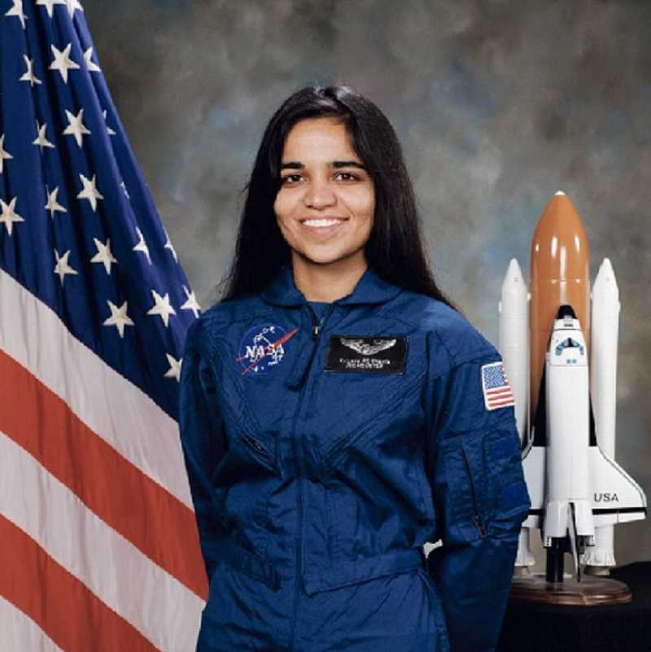
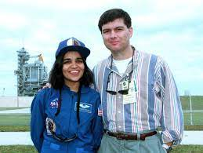
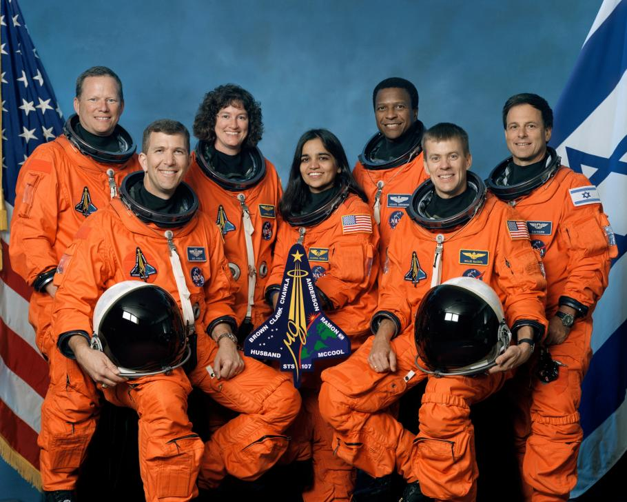

Astronaut Kalpana Chawla was the first Indian-born woman in space.Kalpana Chawla became
the first Indian-born woman to go to space in 1997. Six years later, on February 1, 2003,
Chawla died when the space shuttle Columbia broke up on re-entry into Earth's atmosphere,
killing all seven astronauts on board.Chawla's legacy has lived on, however. In particular,
her talent and hard work have inspired young people in India and around Earth
to consider careers in spaceflight.
Earlylife
Born in Karnal, India, on March 17, 1962, to parents Banarasi Lal Chawla and Sanjyothi Chawla,Kalpana Chawla was
the youngest of four children Until she started school, Chawla hadn't been formally named. Her parents called her
Montu,but Chawla picked her own name from a selection when she entered education.The name Kalpana means
"idea" or "imagination." Her full name is pronounced CULL-pah-na CHAU-la,though she often went by the nickname
K.C.As a child, Chawla developed an interest in flying after first seeing a plane at around the age of three.
She spent days with her father visiting her local flying club with her father and showed an interest in aviation
while at school.

Education
Graduated from Tagore School, Karnal, India, in 1976. Bachelor of
science degree in aeronautical engineering from Punjab Engineering College, India, 1982.
Master of science degree in aerospace
engineering from University of Texas, 1984.
Doctorate of philosophy in aerospace engineering from University of Colorado, 1988.
PersonalLife

On 2 December 1983, Kalpana Chawla was married to Jean-Pierre Harrison at the age of 21.
After the Columbia disaster, Harrison was approached by filmmakers to make a movie on
Chawla's life, but he
refused because he prefers to keep their life private.
ColumbiaDisaster

In 2000, Chawla was selected for her second flight as part of the crew of STS-107. This mission was repeatedly delayed due to scheduling conflicts and technical problems such as the
July 2002 discovery of cracks in the shuttle engine flow liners. On 16 January 2003, Chawla finally returned to space aboard Space Shuttle Columbia on the ill-fated STS-107 mission.
The crew performed nearly 80 experiments studying Earth and space science, advanced technology development, and astronaut health and safety.During the launch of STS-107,
Columbia's 28th mission, a piece of foam insulation broke off from the Space Shuttle external tank and struck the port wing of the orbiter. Previous shuttle launches had
seen minor damage from foam shedding, but some engineers suspected that the damage to Columbia was more Serious. NASA managers limited the investigation, reasoning that
the crew could not have fixed the problem if it had been confirmed. When Columbia re-entered the atmosphere of Earth, the damage allowed hot atmospheric gases to penetrate
and destroy the internal wing structure, which caused the spacecraft to become unstable and break apart. After the disaster,Space Shuttle flight operations were suspended for more than
two years, similar to the aftermath of the Challenger disaster. Construction of the International Space Station (ISS) was put on hold; the station relied entirely on the Russian
Roscosmos State Corporation for resupply for 29 months until Shuttle flights resumed with STS-114 and 45 months for crew rotation.Chawla died on 1 February 2003, in the Space Shuttle
Columbia disaster,along with the other six crew members, when Columbia disintegrated over Texas during re-entry into the Earth'atmosphere, shortly before it was scheduled to conclude it's
28th mission, STS-107. Her remains were identified along with those of the rest of the crew members and were cremated and scattered at Zion National Prk in Utah in accordance with her wishes.
Awards
Posthumously awarded the Congressional Space Medal of Honor, the NASA Space Flight Medal, and the NASA Distinguished Service Medal.
NASAExperience
Selected by NASA in December 1994, Kalpana Chawla reported to the Johnson Space Center in March 1995 as an astronaut candidate
in the 15th Group of Astronauts. After completing a year of training and evaluation, she was assigned as crew representative
to work technical issues for the Astronaut Office EVA/Robotics and Computer Branches. Her assignments included work on development
of Robotic Situational Awareness Displays and testing space shuttle control software in the Shuttle Avionics Integration Laboratory.
In November, 1996, Kalpana Chawla was assigned as mission specialist and prime robotic arm operator on STS-87. In January 1998,
she was assigned as crew representative for shuttle and station flight crew equipment, and subsequently served as lead for
Astronaut Office’s Crew Systems and Habitability section. She flew on STS-87 (1997) and STS-107 (2003), logging 30 days,
14 hours and 54 minutes in space.